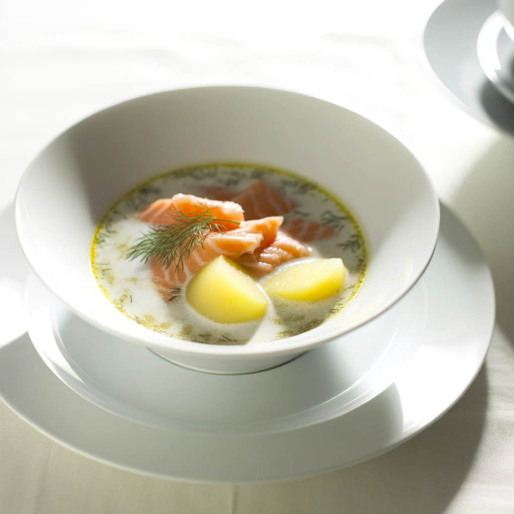
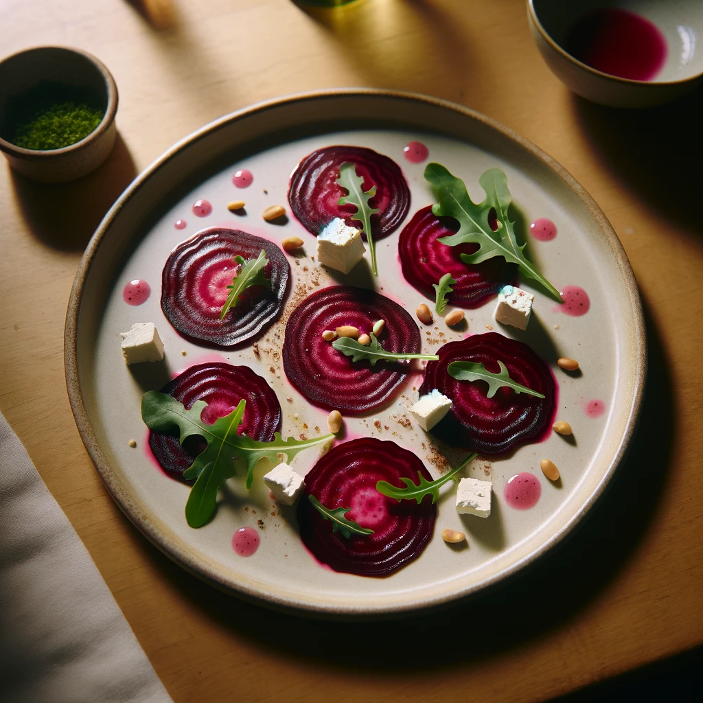

Starters
-
Lohikeitto
Traditional Finnish salmon soup, enriched with creamy broth, potatoes, and dill.
 -
Sieni-Crostini
Wild mushroom crostini, topped with herbed ricotta and a drizzle of balsamic reduction.

-
Punajuuri Carpaccio
Thinly sliced beet carpaccio, served with goat cheese, arugula, and pine nuts, dressed with a raspberry vinaigrette.
